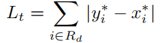
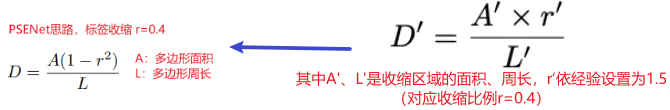
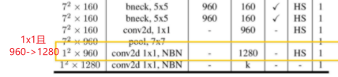
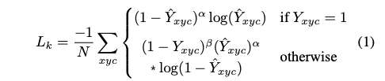
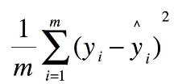

面试指北
猪只标注数据，有非猪只遮挡物的标全身，猪只相互遮挡的只标露出部分，露出极小部分的不标注，目的是为了DB网络的收敛。
RetinaFace¶
-
本身就是
RetinaNet的改进版本，resnet50-cabm的3个特征图-->FPN(多尺度特征融合:3个特征图)->SSH(每个特征图都要进行SSH处理:3个特征图)-->每个特征图都要通过通过两个1x1卷积分支来进行分类(是不是物体)和框回归(pre框与gt框的相对缩放量和位移量)，CBAM的论文中说在resnet50中性能明显提高。 -
model结构
- SSH(类似RPN操作)：通过简单的叠层卷积合并上下文信息(一般在two-stage 的目标检测模型当中，都是通过增大候选框的尺寸大小以合并得到更多的上下文信息)，速度更快，同时增加感受野
- 困难样例挖掘(hard negative mining)：
iou_thresh>0.5是正负样本的阈值，但是negative >> positive，结果会向负样本靠拢。保证正：负大约为1:3，正样本固定，首次负样本随机选取训练网络，，再用训练好的网络去预测负样本集中剩余的负样本，选择其中得分最高topk(hard negative)作为负样本集中重新训练，结果会越来越好.
注意力机制¶
好处:稍微增加一点计算量但效果较好。
SE模块:主要学习通道之间的相关性;通过对卷积的特征图进行**压缩**和**扩展**处理，得到一个和通道数一样的一维向量作为每个通道的评价分数，然后将该分数分别施加到对应的通道上，得到其结果。
- 压缩:
CxHxW-->global average pooling-->1x1xC这个1x1xC的特征图可以理解为全局感受野(线性的，如果直接乘没啥意义) - 扩展:使用一个全连接神经网络，对
Sequeeze之后的结果做一个**非线性变换**，得到各通道的评价分数。
class SELayer(nn.Module):
def __init__(self, channel, reduction=16):
super(SELayer, self).__init__()
self.avgpool = nn.AdaptiveAvgPool2d(1)
self.fc = nn.Sequential(
nn.Linear(channel, channel//reduction,bias=False),
nn.ReLU(inplace=True),
nn.Linear(channel//reduction,channel, bias=False),
nn.Sigmoid()
)
def forward(self, x):
b,c,h,w = x.size()
y = self.avgpool(x).view(b,c)
y = self.fc(y).view(b,c,1,1)
return x * y.expand_as(x)
CBAM:集成了通道注意力模块和空间注意力模块，常在ResNet中的每个block中添加了CBAM模块，打比赛常用。
- 通道注意力模块，
shared MLP:1x1conv+relu+1x1conv，进行线性变换，sigmoid压缩得分到[0,1]
- 空间注意力机制:
def forward(self, x):
avgout = torch.mean(x, dim=1, keepdim=True) # 对通道维度求平均
maxout, _ = torch.max(x, dim=1, keepdim=True) # 对通道维度求最大
x = torch.cat([avgout, maxout], dim=1) # 合并得到通道为2的卷积层
x = self.sigmoid(self.conv(x))# 进行卷积和sigmoid，得到通道为1的得分特征图
return x
- 通道+空间注意力机制
Kmeans聚类¶
kmeans与kmeans++聚类:博客
kemeans聚类出k类长宽(不是长宽比)即可,由于数据集中图片大小可能不同，需要先归一化box的宽高:·=w=w_box/w_img,h=h_box/h_img，kmeans聚类的衡量指标是d = 1 - IOU(因为我们只关心pre_box与gt_box的iou，且iou越大表示距离越近)，计算IOU时，不用管box的位置，我们假设所有box的左上顶点都在原点

Kmeans(缺点:对种子点的初始化非常敏感)- 随机选取
K个box作为初始anchor； - 使用
1 - IOU度量，将每个box分配给与其距离最近的anchor； - 计算每个簇中所有
box宽和高的均值，更新anchor； - 重复2、3步，直到anchor不再变化，或者达到了最大迭代次数
kmeans++- 随机选取
1个box作为初始anchor； - 使用
1 - IOU度量，计算box与最近的聚类中心的距离D(x)； 选择D(x)较大的点作为新增的聚类中心，注意不要选择最大值(排序按照概率值选择)，可能是异常点- 重复2~3，直到k个聚类中心被选出来
- 利用这
k个初始的聚类中心来运行标准的k-means算法
Focal Loss¶

Focal Loss主要是在原有交叉熵损失的基础上加入了gamma因子和alpha因子，其中gamma因子主要是控制困难样本挖掘的，alpha因子主要是平衡正负样本比例不均衡的。
- 困难样例挖掘，加入
gamma因子
- 对于正样本而言，预测结果
y'=0.95肯定是简单样本，1-0.95的alpha次方就很小，损失函数就很小;如果y'=0.35肯定是困难样本，1-0.35的alpha次方相对简单样本会较大，损失也会相对较大，这样就会更加关注困难样本。 -
对于负样本而言，预测结果
y'=0.05肯定是简单样本，0.05的alpha次方就很小，损失函数就很小;如果y'=0.75肯定是困难样本，0.75的alpha次方相对简单样本会较大，损失也会相对较大，这样就会更加关注困难样本。 -
平衡正负样本比例不均衡，加入平衡因子
alpha

alpha=0.25，通过控制平衡因子大小来平衡loss
Repulsion Loss|[rɪ'pʌlʃən]:斥力¶
本文是旷视研究院CVPR2018上的一篇工作，主要目的是为了解决行人检测的遮挡。
目标重叠导致两个问题：框偏移和漏检
三部分:loss=P_T_loss+P远离B_loss+P远离P'_loss，B是除去本身要回归目标的真实框外，与其IoU最大的真实框;P+为正候选框集合，表示至少与其中一个真实框的IoU大于某个阈值(0.5)，其实就是正样本。
- P,T吸引:
P_T_loss：就是简单的smoothL1 Loss，用来优化预测框P和所负责的目标框T的距离。
- P,B排斥:
P远离B_loss:Smoothln(IoG(P,B))_loss,使预测框P尽量远离和它重叠的第二大的GT框B
- P,P'排斥:
P远离P'_loss，从代码上看，目的是保证使分派到不同GT的预测框之间尽量远离。
α和β用于平衡两者的权重。
TTA¶
WBF(比赛专用:Weighted Boxes Fusion)code¶
加权边框融合，常用于融合多个模型对同一张图片的框预测，或者单个模型不同尺度的结果融合，比NMS慢3倍。
-
每个模型的每个预测框都添加到
List B，并将此列表按置信度得分C**降序**排列 -
建立空
List L和list F（用于融合的） -
循环遍历
B，并在F中找到与之匹配的box（同一类别MIOU > 0.55:最佳阈值） -
如果
step3中没有找到匹配的box就将这个框加到L和F的尾部，如果step3中找到了匹配的box就将这个框加到L，加入的位置是box在F中匹配框的Index；L中每个位置可能有多个框，需要根据这多个框更新对应F[index]的值，其实list L称为dict L更好。更新方式如下(对坐标值根据置信度求和):

- 遍历完成后对
F中的元素再进行置信度得分的缩放，减少某些box只被少数模型预测到的置信值(如果群集中的多个框得分较低，则可能意味着 只有少数模型可以预测。 因此，我们需要降低此类情况的置信度得分)。

数据增强¶
多尺度训练:mmdetection：
keep_ratio=True:img_scale的多尺度最多为两个。假设多尺度为[(2000, 1200), (1333, 800)]，则代表的含义为：首先将图像的短边固定到800到1200范围中的某一个数值假设为1100，那么对应的长边应该是短边的ratio=1.5倍，且长边的取值在1333到2000的范围之内。如果大于2000按照2000计算，小于1300按照1300计算。keep_ratio=False:img_scale的多尺度可以为任意多个。假设多尺度为[(2000, 1200), (1666, 1000),(1333, 800)]，则代表的含义为：随机从三个尺度中选取一个作为图像的尺寸进行训练。
Mixup
Mixup:将随机的两张样本按比例混合，loss部分也根据混合比例分配；- 两张样本图片:
inputs = lam*images + (1-lam)*images_random，直接像素相加(尺寸不同时取最大值:(600,800),(900,700)->(900,800),补0)。 loss = lam * criterion(outputs, targets_a) + (1 - lam) * criterion(outputs, targets_b)
MinIoURandomCrop
- 随机
crop the image & bboxes，由于可能正好把框切开但是必须保证有最小的min iou thresh,min_ious=(0.1, 0.3, 0.5, 0.7, 0.9)中随机选择。
其他
- Noise：椒盐噪声、高斯噪声、斑点噪声等随机选择
- Blur：高斯模糊，中值模糊等随机选择(推荐
mmdetection+ablur) - RandomBoxShake:随机原始的标注框抖动应对标注
noise - PixelDistort[dɪ'stɔː®t]使变形：像素级变换，一般都要加，其实就是调整图像的颜色，色调，饱和度
DB(19/11 Differentiable Binarization:可微分二值化)¶
直接语义分割，不用考虑遮挡问题；一般的语义分割网络都是直接输出二值语义概率图，然后通过阈值二值化得到最终结果(一般较好的结果需要复杂的后处理)，DB直接把阈值二值化过程变的**可微分**，直接进行网络优化，得到更好的语义概率图。
标签制作
- 概率图
P的生成：向里面压缩d，蓝框表示，黑色区域值为0，白色区域值为1 - 阈值图
T的生成：向外面扩展d成绿框，向里面压缩d成蓝框，绿蓝之间的为目标边界，值为绿蓝之间所有像素到红线(实际边界)的距离(收缩框和扩张框之间差集部分里每个像素点到原始图像边界的归一化距离[0,1])，黑色区域值为0+0.3为了计算二值图时可以更好的分开边界。
网络结构
可微分二值化:自适应阈值的可微分二值化不仅可以从背景中定位文本区域，还可以帮助区分开距离很近的文本实例。
损失函数

Ls,Lb都是binary cross-entropy (BCE:二元交叉熵),同时为了解决正负样本不均衡使用hard negative mining,使得正负样本1:3

Lt是预测结果和标签之间的L1距离，其中Rd(红->绿)是在膨胀Gd内像素的索引，y*是阈值map的标签，使用10是因为Lt的结果会影响到Lb(因为是同一个特征图的两个分支)。

推理流程
在推理时可以采用概率图或近似二值图来生成文本框，为了方便作者选择了概率图，具体步骤如下:
-
二值图确定:
-
使用**近似二值图B**，直接使用即可
-
使用**概率图P**：使用固定阈值
0.2将概率图做二值化得到二值化图，由二值化图得到收缩文字区域(作者推荐) -
将收缩文字区域按
Vatti clipping算法(PSENet)的偏移系数D'进行扩张得到最终文本框

MobileNet¶
MobileNetV1 = 深度可分离卷积+PReLU(原始是ReLU6)+通道控制系数widen_factor=[2,1,0.75,0.5,0.25]，这样就产生模型__all__ = ['mobilenet_2', 'mobilenet_1', 'mobilenet_075', 'mobilenet_05', 'mobilenet_025']
除了第一层卷积是普通卷积外，其他所有层都是深度可分离卷积(group=in_channels conv + 1x1conv)，激活函数全部使用relu 或者prelu，最后一层接fc之前使用globalAvgPooling，其实可以把fc换成1x1 conv来加快速度。
mobilenetv1主要是引入了**深度可分离卷积**
mobilenetv2主要是引入了**深度可分离卷积+倒残差结构**
-
mobilenetv3主要是MobileNet V1的**深度可分离卷积**+MobileNetV2的**线性瓶颈的倒残差结构**+SE注意力模块，且结合采用神经网络搜索的方法，说是用了h-swish=x*ReLU6(x+3)/6函数(一般使用时常用relu代替)，同时对v2最后阶段做了更改: -
mobilenetv1最后使用的是avgpool 7x7 +fc -
mobilenetv2最后使用的是conv 1x1 + avgpool 7x7 + conv 1x1(==fc)- 先使用
conv1x1卷积升维度，但由于此时的特征宽高是7x7的，引入了额外的计算量
- 先使用
-
mobilenetv3最后使用的是conv 1x1 + avgpool 7x7 + conv 1x1 + conv 1x1(==fc)
- 先进行
avgpool 7x7，把特征宽高降为1x1，然后再是使用1x1卷积升维，计算量减少。
- 先进行
PReLU:带参数的ReLU
ai=0，那么PReLU退化为ReLU；-
如果
ai是一个很小的固定值(如ai=0.01)，则PReLU退化为Leaky ReLU(LReLU) -
BP更新ai时，采用的是带动量的更新方式：下面两个系数分别是动量和学习率。
RetinaFace检测的局限性¶
- 由于猪只尺寸相差不大，又是同一个方向运动，存在遮挡挤压状况，如果某个特征图产生的一个
anchor框同时分配给这个目标，会产生目标重写现象，导致漏检(尤其是小特征图中，感受野较大，重写现象发生概率大)，增大图片分辨率或者增加特征图大小，速度会变慢 kmeans使得差不多尺寸的猪只(或者有几种特定尺度的物体)强制被分到不同层中被预测，这是有问题的。
模型剪枝¶
gamma系数绝对值排序裁剪
系数训练方式
剪枝后每层通道剩余设置为2^x数目，这样较稳定但牺牲了部分压缩率
- 恒定
s剪枝:一直以固定的L1惩罚系数s=0.001 - 全局
s衰减剪枝:s = s if epoch <= opt.epochs * 0.5 else s * 0.01，超过epochs/2后惩罚系数衰减100倍，使得精度稍微恢复。 - 局部
s衰减剪枝:超过epochs/2后对85%的通道(所有bn通道s排序)保持原始恒定惩罚系数s压缩，15%的通道进行s衰减100倍的压缩(85%是个先验知识，一般这个压缩率是最佳的)。
tensorboard记录稀疏BN层gamma权重变化
如何确定裁剪率
设置裁剪率:range(0.60,0.90,0.01)，跑mini_testData:100张，确定最高AP的裁剪率65.7%
精度恢复:
- 微调finetune(3~5个epochs)，观察
finetune前后BN层的权重分布
-
微调模型前后
Conv等层权重变化平缓，但是BN层变化巨大，所以冻结其他层参数，只finetune BN层的参数，效果稍微有提升 -
模型蒸馏(推荐):对模型蒸馏来说，网络在结构相似的情况下提升效果尤为明显，剪枝模型和原始模型之间网络结果高度相似，使用蒸馏效果更好。
知识蒸馏(分类/回归用)¶
只蒸馏一个输出层
-
要蒸馏的小模型，以大模型的输出的概率向量(
soft target:软标签->拥有不同类之间关系的信息)为学习目标，因为one-hot包含的信息量很低[0,1]（类似label smooth），因为负标签也带有大量信息。 -
如何做，在训练的时候在
softmax中增加温度参数T，推理的时候T=1，优化L_soft的时候常用KL散度计算Loss:交叉熵=KL散度+熵，one-hot标签的真实信息熵是固定的所以用交叉熵代替KL散度，但是soft label的信息熵是teacher网络生成的，不是固定的，所以必须用KL散度。
- 温度
T:越小越放大正样本，越大越放大负样本(即放大小概率值分量所携带的信息)。

# 损失函数
criterion = nn.CrossEntropyLoss()
criterion2 = nn.KLDivLoss()
# 经典损失
outputs = model(inputs.float())
loss1 = criterion(outputs, labels)
# 蒸馏损失
teacher_outputs = teach_model(inputs.float())
T = 2
alpha = 0.5
outputs_S = F.log_softmax(outputs/T,dim=1)
outputs_T = F.softmax(teacher_outputs/T,dim=1)
loss2 = criterion2(outputs_S,outputs_T)*T*T
#综合损失结果
loss = loss1*(1-alpha) + loss2*alpha
精度更高的模型蒸馏小模型提升点更少，原因分析：
Teacher更复杂，Student没有足够的能力来模仿TeacherTeacher的精度更高，模型确定性更强，输出logits（soft label）变得less soft，趋近于one-hot- 解决方案:可以利用超大模型作为**助教网络**辅助蒸馏(超大网络作为
Teacher,大网络作为Teach-Assistant，小网络作为Student) - 首先对超大网络对大网络进行蒸馏(大网络的选取和超大网络相差不要太大(
7倍以上)，不然也蒸不出来) - 再用整理好的大网络对最终的小网络进行蒸馏
多个Teacher模型如何蒸馏link
- 将多个teacher模型的预测概率（softmax后输出）求平均值来进行蒸馏，效果好于随机选一个teacher模型进行蒸馏。
输出层和特征层一起蒸馏

- 对于T和S中间特征图输出维度不匹配的问题，采用在
S网络输出接一个转换器(conv+bn+mish)，将其升维到T网络匹配，T的话直接接一个mish保证激活函数相同(mish=x*tanh(ln(1+e^x)))。loss:nn.MSE-->预测数据和原始数据对应点误差的平方和的均值

目标检测实际蒸馏(尝试三种)
output蒸馏:普通蒸馏KL散度
# 对于分类和回归都是按照KL散度loss直接进行蒸馏
def distillation_loss1(output_s, output_t, num_classes, batch_size):
T = 3.0
Lambda_ST = 0.001
criterion_st = torch.nn.KLDivLoss(reduction='sum')
output_s = torch.cat([i.view(-1, num_classes + 5) for i in output_s])
output_t = torch.cat([i.view(-1, num_classes + 5) for i in output_t])
loss_st = criterion_st(nn.functional.log_softmax(output_s/T, dim=1), nn.functional.softmax(output_t/T,dim=1))* (T*T) / batch_size
return loss_st * Lambda_ST
output蒸馏:分类和回归分开蒸馏
分类还是使用普通的蒸馏策略(使用KL散度loss来求分类总loss)，但对于回归loss,发现先对student+target的boxs求均值，然后优化student和t_tar_mean_box的CIOU loss(优于1/2*l2 loss)，效果更好，alpha=0.001
-
1/2*L2 loss训练初期，x值很大时，其导数也很大，训练初期训练不稳定。但对于蒸馏来说，属于训练后期，类似smooth l1 loss的后期。 -
特征图蒸馏+
output蒸馏
因为网络结构一样，输出对应的中间四层特征图进行蒸馏，因为通道数的不同，使用1x1 conv保持维度相同，然后计算其MSE loss，使用较小的系数0.005加入到总loss里面。
-
Teach-Assistant(助理) Distillation:没有尝试 -
如果
T,S之间差距非常大(7倍以上)，可以借助一个中间的网络M，先用T蒸馏M，再用M蒸馏S
在线量化之二值化(BWN:Binary Weight Networks)¶
BWN:论文中初次提出的权重二值化是把卷积或者全连接层的卷积核参数变成**W_binary{-1,1}*α(尺度参数)代替权重W_float32**，对于activation仍然采用float32全精度。
W_binary = sign(W_float32)，但是sign函数在0处不可导，开山之作:BinaryNet作者使用**直通估计器:STE**(前向提取输入的正负,即{-1,+1}，反向使用clip(-1,x,1)的导数来拟合sign的导数),也就是说output_grad = abs(input)>1--->grad==0*src_grad，当output_grad = abs(input)<=1--->1*src_grad
α如何确定最优？α最优值=np.sum(abs(w)) / n（该层相应卷积核参数的L1范数的均值），论文中有推理公式。
# 如果要进行激活二值化，第一个卷积层参数不能是二值，因为图片是8bit，如果直接二值化，丢失信息过多
# STE
class BinActive(torch.autograd.Function):
'''
Binarize the input activations for ***** BNN and XNOR *****.
'''
@staticmethod
def forward(ctx, input):
ctx.save_for_backward(input)
input = input.sign() # 使用y=x函数拟合梯度
return input
@staticmethod
def backward(ctx, grad_output, ):
input, = ctx.saved_tensors
grad_input = grad_output.clone()
# 开山之作BNN中激活值:当sign函数的输入的绝对值大于1的时候，将梯度置0可以得到更好的实验结果。
grad_input[input.ge(1)] = 0
grad_input[input.le(-1)] = 0
# 最终的梯度结果就是sign函数的梯度计算使用clip(-1,x,1)函数来拟合
return grad_input # 当在[-1,1]范围内，直接返回
class BWNConv2d(nn.Conv2d):
def forward(self, x):
w = self.weight
alpha = torch.mean(
torch.mean(torch.mean(abs(w), dim=3, keepdim=True), dim=2, keepdim=True), dim=1,
keepdim=True).detach()
bw = BinActive().apply(w) # 对权重进行二值化(量化)
bw = bw * alpha
# bx = BinActive().apply(x) # 对激活值进行二值化(量化)
output = F.conv2d(x, bw, self.bias, self.stride, self.padding,self.dilation,self.groups)
return output
最终结果显示:每个卷积核自身的参数绝对值相同，但不同卷积核的绝对值不相同

DoReFa-Net在线量化任意比特(2,8等)
直通估计器STE
from torch.autograd import Function
def quantize_k(r_i, k):
scale = (2**k - 1)
r_o = torch.round( scale * r_i ) / scale
return r_o
class DoReFaQuant(Function):
@staticmethod
def forward(ctx, r_i, k):
tanh = torch.tanh(r_i).float()
r_o = 2*quantize_k( tanh / (2*torch.max(torch.abs(tanh)).detach()) + 0.5 , k) - 1
return r_o # 返回的权重范围是[-1~1]
@staticmethod
def backward(ctx, dLdr_o):
# due to STE, dr_o / d_r_i = 1 according to formula (5)
return dLdr_o, None
# 改善版的对激活也做量化限定
class ActivateQuantizer(Function):
@staticmethod
def forward(ctx, input, nbit):
return quantize_k(input,nbit)
@staticmethod
def backward(ctx, grad_output):
return grad_output, None
class DorafaConv2d(nn.Conv2d):
def forward(self, x,bitwidth=8):
w = self.weight
bw = DoReFaQuant().apply(w,bitwidth) # 对权重进行Dorafa量化限定
# 对x进行截断(x截断前先进行缩放（* 0.1），目的是减小截断误差)，适应于relu激活的函数，如果是使用PACT限定的话，就不能用了
x = ActivateQuantizer.apply(torch.clamp(0.1*input,0,1),bitwidth)
output = F.conv2d(x, bw, self.bias, self.stride, self.padding,self.dilation,self.groups)
return output
人脸检测(DBFace:深蓝科技)¶
优势:可以使用多尺度运算且无需计算anchor(耗时),
数据输入
# 001.jpg #图片名
x y w h lx1 ly1 lt1 lx2 ly2 lt2 ... # box：x,y,w,h landmark:坐标(x1,y1),是否有效:t1
x y w h lx1 ly1 lt1 lx2 ly2 lt2 ...
# 002.jpg
....
需要注意的点
- 高斯热力图详解:可以理解为一个目标用一个高斯圆表示，目标框中心点值为
1，如果1周围设置为0就太严格了，所以以该点为圆心，以和GT框IOU大于0.7的这些点(这些点生成的框也能很好的包围目标)为半径r，采用高斯函数生成最终的结果，如果有多个类某一个类的两个高斯分布发生了重叠，直接取元素间最大的就可以
-
anchor base的特性是目标越大正类loss贡献越大,anchor free的特性是所有目标都一个点，正类贡献无论大小都一样(一般对小目标较友好)，所以在多尺寸目标训练中，需要使用pos_weights来处理，增加大目标的权重。 -
具体做法:设置高斯权重热力图
heatmap_posweight，在有大尺寸的目标图的点采用高斯分布圆，在计算损失的时候直接和loss相乘来增大大目标在损失中的权重占比。 -
对于
12*12，低于这个分辨率的直接做了负样本做法是不合理的，合理的做法是忽略，不应该对loss产生贡献 -
具体做法是采用
keep_mask图，低于12*12像素的点的坐标直接置为0，在计算loss的时候直接与keep_mask图相乘，即不参与损失贡献且对应的人脸关键点也不会参与计算损失值。 -
高斯热力图使用
Focal Loss改版计算损失，默认alpha=2,beta=4，困难样例挖掘

- 对于正样本而言，预测结果
y^=0.95肯定是简单样本，1-0.95的alpha次方就很小，损失函数就很小;如果y^=0.35肯定是困难样本，1-0.35的alpha次方相对简单样本会较大，损失也会相对较大，这样就会更加关注困难样本。 - 对于负样本而言，预测结果
y^=0.05肯定是简单样本，0.05的alpha次方就很小，损失函数就很小;如果y^=0.75肯定是困难样本，0.75的alpha次方相对简单样本会较大，损失也会相对较大，这样就会更加关注困难样本。 - 上面提到的困难样本指两个方面:
- 真正困难样例，
Focal Loss会增大这样样本对损失的贡献 - 样本分错情况，如果正负样本比例不均衡，也会出现更多的样本被分错，抑制这种分错样本。
- 真正困难样例，
class FocalLoss(nn.Module):
def forward(self, pred, gt, pos_weights, keep_mask=None):
pos_inds = gt.eq(1).float() # 等于1 为正样本
neg_inds = gt.lt(1).float() # 小于1 为负样本
# pos_weights:高斯权重图，负样本地方直接为0，正样本中间为1，半径r内高斯递减
pos_loss = torch.pow(1 - pred, 2) * torch.log(pred) * pos_weights
neg_loss = torch.pow(1 - gt, 4) * torch.pow(pred, 2) * torch.log(1 - pred) * neg_inds
if keep_mask is not None:
pos_loss = (pos_loss * keep_mask).sum()
neg_loss = (neg_loss * keep_mask).sum() # 使用keep_mask图来忽略超小样本，不作为负样本loss
else:
pos_loss = pos_loss.sum()
neg_loss = neg_loss.sum()
return -(pos_loss + neg_loss)
网络结构
def forward(self, x):
# 1.选取0,2,7 block + 进入block前的x(x=CBAModule(x))
s4, s8, s16, s32 = self.bb(x)
s32 = self.conv3(s32)
# 2.上采样采用的是双线性差值+conv+bn+relu，效果优于反卷积和最近邻。
s16 = self.up0(s32) + self.connect2(s16)
s8 = self.up1(s16) + self.connect1(s8)
s4 = self.up2(s8) + self.connect0(s4)
# 3.使用SSH进行对融合后的特征图进行合并上下文信息 且 扩大感受野
x = self.detect(s4) # SSH
# 4 高斯热力图，人脸框，landmark框都是在(H//4,W//4)的特征图上进行的,回到原图需要*4
# 4.1 输出高斯热力图(N,1,H//4,W//4),sigmoid压缩到[0,1],使用FocalLoss计算损失，平衡正负样本比例，如果是多个类(N,class_nums,H//4,W//4)
heat_map = self.center(x) # conv->out_channels=1,
heat_map = heat_map.sigmoid() # hm使用sigmoid压缩范围[0,1]
# 4.2 输出人脸框(N,4,H//4,W//4)tlrb:分别是距离框左上角和右下角的距离。GIoULoss优化(优于IOU,因为IOU无法优化两筐不重叠情况)，权重占比为5
box = self.box(x) # conv->out_channels=4
box = torch.exp(box) # 进一步对框进行增强，目的是拉开其内元素的差距。
if self.has_landmark:
# 4.3 输出5个关键点(N,10,H//4,W//4),使用WingLoss计算损失，使得关键点更准确
landmark = self.landmark(x)
return heat_map, box, landmark
return heat_map, box
测试
- 高斯热力图:由一个
3x3 max pool(stride=1)处理heat_map获得**高斯热点**(即最有可能为目标的中心坐标)，取top1000进行后处理。然后使用thresh=0.3来过滤掉高斯分值较低的点，找到高斯分值较高的中心点坐标(cx,cy)即可 - 人脸框输出值，根据高分的高斯热点中心点计算实际人脸坐标框，然后使用
nms处理即可(iou_thresh=0.3)，网络输出的就是实际偏差值。 - 如果有
landmark，和人脸坐标框相似，直接用(cx,cy)+=xxx来获取实际坐标值即可，网络输出的就是实际偏差值。
缺点：两个物体在GT中的中心点重叠了，就只能预测一个物体，因为只有一个中心点，但对于闸机/门禁/门锁等更加关注单人人脸，如果排队人背后有部分人脸检测不到才是最好的。
BN层融合¶
DBFace在使用量化工具量化时会进行BN+Conv的融合，融合公式如下
RepVGG(Binary无法使用)¶
使用网络 Binary_Resnet18_0.25(channel/4,结尾fc),很多地方有3x3卷积，可用repVGG②增强,特征图缩小2倍可用repVGG①增强；人脸框扩充长边的1.2倍且短边补齐遇到边缘停止，切图若不是正方形短边对称补127到正方形状--->resize=(128,128)--center crop-->(112,112)
- 在训练时候使用
B结构(这种结构有个弊端:经过卷积后特征图尺寸不能变化,所以可以用在不改变特征图大小的卷积上)，在推理时把每层的3x3+1x1+x进行融合，然后再进行推理
3x3卷积+1x1卷积+Identity融合:把1x1,Identity都变为3x3卷积后和3x3卷积的权重相加进行融合即可
-
3x3卷积 p=1,s=1这样特征图大小是没变的，1x1卷积 p=0,s=1特征图大小也是没有改变的，只需要把1x1卷积padding一圈0变成3x3卷积核，然后return W_3x3+W_1x1_pad_3x3即可 -
x->Identity->x，如何变为3x3卷积呢?如果是深度可分离的1x1卷积，每个通道的值都为1，这样就能完成Identity效果,(Depthwise卷积不能融合普通卷积，就把Depthwise卷积改为普通卷积即可:第一个卷积核第一通道为1，其他通道为0);把1x1卷积padding一圈0变成3x3卷积核然后再和前两者kernel权重相加就可以了
补充:卷积过程
- 卷积计算公式:
w = (w + 2p -fw)/s + 1
Rotate-andRender人脸旋转增强¶
-
通用的人脸旋转一般是基于同一人脸的多视角数据训练直接生成新视角，但对图像质量要求高(受到图片质量以及数据分布的限制)；
-
这个使用无监督训练:摆脱多视角数据，仅仅需要单张图片，利用三维人脸建模，通过反复的旋转和渲染操作构建自监督(渲染从任意角度旋转到当前角度的带遮挡伪影和瑕疵的人脸，从而和原图构建训练数据对)，然后用一个普通的
pix2pix生成最终图像。注:三维空间到二维图像的额渲染是纹理注册的逆向过程
- Gan网络的生成:
CycleGAN的ResBlock生成器，使用pix2PixHD的loss来训练鉴别器。
- 整体网络结构(角度[yaw,pitch]->[-90,90])。
ROC曲线¶
-
正类和负类:假设阈值为
0.6,得分大于等于0.6的为正类，小于0.6的为负类 -
ROC曲线的横纵坐标 -
纵坐标
真阳率-TPR:预测为正实际为正占所有正实例的比例:p=1,gt=1/all(gt=1) -
横坐标
假阳率-FPR:预测为正实际为负占所有负实例的比例:p=1,gt=0/all(gt=0) -
真阴率-TNR=1-FPR:预测为负实际为负占所有负实例的比例:p=0,gt=0/all(gt=0) -
每个阈值代表一对
(FPR,TPR),阈值无穷大时预测无正例FPR=TPR=0，阈值为0时预测无负例FPR=TPR=1,一般随着阈值逐渐增大，正例越来越少，横坐标减少的更快
-
如何画
roc曲线，一般选取range(0.1,1,0.001)共计90组阈值，计算AUC:(Area under Curve)，是个概率值[0,1],越大分类效果越好。 -
为什么使用
ROC曲线而不使用PR曲线？原因:当测试集中的正负样本的分布变换的时候(例如负样本数量增大10倍)，ROC曲线能够保持不变,但是PR曲线巨变
人脸关键点和头部姿态¶
backbone：MobileNetV1-0.5(avgpool+conv1x1 代替fc,fc效果稍微好点但速度慢),0.5指的是通道控制系数，最后一层使用1x1卷积代替fc，因为上层是全局平均池化层，10(关键点)+4(四元数)个值的回归，人脸检测1.5倍的扩框-遇到边缘停止-切图-对称补0到正方形-rezie=(120,120)搞定
使用的数据集:角度是弧度制,欧拉角都限定在[-100度,100度]，转为弧度范围是[-1.75,1.75],由于**欧拉角和四元数(表示在一个四维空间的轨迹和方向，范围[-1,1])可以相互转换，直接回归四元数效果更好**
300W-LP(large pose):由300W(AFW,LFPW,HELEN,IBUG,XM2VTS等合集)数据做的大型人脸姿态预测的一个综合数据库，里面包含28个2d关键点和头部姿态信息[pitch,yaw,roll]，共计61225张。
AFLW2000:由AFLW数据库的前2000张图片及其三维信息组成，里面包含21个2d关键点和头部姿态信息[pitch,yaw,roll]，共计2000张。
# xxxx.jpg xxxx.mat
# mat文件具体包含以下内容：
1）pt2d：21个二维点
2）Illum_Para：1×10 光照参数
3）Color_Para：1×7 颜色参数
4）Tex_Para： 199×1 纹理参数
5）Shape Para： 199×1 形状参数
6）Exp_Para： 29×1 表情参数
7）Pose： 1×7 姿态参数，分别为：pitch， yaw， roll， translation(dx，dy，dz)，scale
8）pt3d_68： 3×68 三维特征点
import scipy.io as sio
mat_dict = sio.loadmat(mat_path)
mat_dict['pt2d'] # 获得的是原图的21个关键点
mat_dict['Pose'][0,:3] # 获取pitch,yaw,roll 三个欧拉角，原始是弧度值
Wing Loss
一般而言人脸关键点loss尝尝是l2 loss或者smooth l2 loss,但是尝尝因为**人脸姿态角度多样**而导致的检测精度不高，使用wing loss可以很好解决离群点(large error)问题和small error问题。
L2 loss或者smooth l2 loss在0附近(small error)的gradient变化趋于平缓的，更不容易优化；而且L2 loss很容易受离群点(large error)影响wing loss分段函数，当两点距离过远时，为了避免loss过大(large loss)使用|x| - C来限定loss不要过大；当|x|<w时，small error时使gradient变化陡峭，使得模型可以继续优化。

wing:翅膀，论文中没有解释命名为此的含义，但看loss像鸟的翅膀一样。
回归评价指标
- 平均绝对值误差(MAE)，头部姿态:
3ddfa_AFLW2000@7.393_best3.83->6.42；人脸关键点检测:3ddfa_AFLW2000_21pts@8.250_best@4.70->5pts@2.385
- 均方误差(MSE)

- 均方根误差(RMSE)
量化¶
fp32、fp16、int8
-
编码存储方式不同：
-
FP32占用4字节编码，共32位，其中1位为符号位，8为指数位，23为尾数位 -
FP16占用2字节编码，共16位，其中1位为符号位，5为指数位，10为尾数位 -
int8，八位整型占用1个字节，共8位 -
训练时为什么用
fp32：fp16的值区间比fp32的值区间小很多，虽然训练很快，但fp16在计算过程中很容易出现**溢出错误:上溢出(>65504)和下溢出(<6x10^-8)**
TensorRT-int8量化(对称量化)
- 模型量化主要包括两个部分，一是针对权重
Weight量化，一是针对激活值Activation量化，将权重和激活值量化到8bit用于等价32bit的性能
-
使用量化校准集进行模型激活值分布的统计，确定激活层的量化参数的方式(每层都要统一多个样本)。
-
最简单的量化，一张归一化的图片
[0,1]->[0,255]，其实就是系数的缩放。
如何选取最合适的scale factor值？
- 映射参数
-|max|->-127,|max|->127，也就是把参数的绝对值最大值当做阈值；有个问题，当参数的分布不均匀时，有一部分是空缺的(例如:激活值全为正)；所以常**选择合适的阈值T,将±|T| 映射为±127,超出 阈值±|T|外的直接加到截断区内最后一个值**
-
截断区(
-T~T)之外的值为什么要加到截断区内最后一个值呢？(阈值还是那个阈值，就是计算的时候加到最后一值上就行，阈值是不改变的) -
一是求
P的概率分布时，需要总的P总值. -
二将截断区之外的加到截断P的最后，这样是尽可能地将截断后的信息给加进来。
-
最优阈值
T如何寻找？保证量化前后分布差异最小即可:KL散度(相对熵:用来衡量两个概率分布之间的差异)，所以使得KL散度最小即可(用来表示int8,fp32值分布之间的信息丢失程度)，这样就把问题转为求int8概率和fp32概率，然后用KL散度作为指标选取最优阈值|T|即可。

-
int8是离散点，两值之间最小值是1，直接使用直方图hist来统计各个区间内有多少个点出现即可。例如int8=[1,2,3,4,5] 在[1,1,4]区间出现1次，在[1.4,1.8]区间出现0次,...,在[4.6,5]出现1次，区间距离为0.4 -
fp32，两值之间最小值是无穷小，那么如何选择合适的区间距离呢？由于要选择合适的阈值T，NVIDAIA推荐使用2048个bins，这样区间距离=[max(x)-min(x)]/bins，这样采用遍历128bin-2047bin来确定合适的阈值T(bin的中间值作为阈值)，使得速度不是特别慢，精度也会较高，注意常用min(abs(x))~max(abs(x))在此区间内进行2048bins。- 为什么不计算
0bin-127bin？如果最佳阈值T在[0bin,127bin]那么超过T的值就直接截断，然后直接一一映射就好了但损失一定过大。
- 为什么不计算
-
返回一系列
|T|值，每一层都有一个|T|。创建 CalibrationTable:[kælɪ'breɪʃ(ə)n]校准，然后把超过阈值|T|后的直接截断
插值
- 最近邻插值(新图坐标点填充附近临近点),对应坐标公式(原图
src,新图det)src_x = det_x/det_w * src_x;src_y = det_y/det_h * srcy
- 双线性插值(原图四点计算新图1点)，坐标点的寻找就按照最近邻即可。
pytorch的钩子函数
# 1.register_forward_hook，获取前向传播过程中，各个网络模块的输入和输出，可对输入和输出进行修改
total_feat_out = []
total_feat_in = []
def hook_fn_forward(m,input,output):
print("model module:",m)
total_feat_out.append(output)
total_feat_in.append(input)
for name,module in model.named_children():
module.register_forward_hook(hook_fn_forward) # 这样会收集每个模块的输入和输出
# 2.register backward hook,获取神经网络反向传播过程中，操作各个模块输入端和输出端的梯度值
total_grad_out = []
total_grad_in = []
def hook_fn_backward(m,grad_input,grad_output):
print("model module:",m)
total_grad_in.append(grad_input)
total_grad_out.append(grad_output)
for name,module in model.named_children():
module.register_backward_hook(hook_fn_backward) # 这样会收集每个模块的梯度输入和输出
# 3.pytorch自定义新层
# 3.1 继承 torch.nn.Module,实现__init__和forward函数即可
# 3.2 继承 torch.autograd.Function,实现__init__和forward函数还有backward，如果要自定义求导规则(例如二值化网络有些不可导函数)，就要用着个方法.
class BinActive(torch.autograd.Function):
'''
Binarize the input activations for ***** BNN and XNOR *****.
'''
@staticmethod
def forward(ctx, input):
ctx.save_for_backward(input)
input = input.sign() # 使用y=x函数拟合梯度
return input
@staticmethod
def backward(ctx, grad_output, ):
input, = ctx.saved_tensors
grad_input = grad_output.clone()
# 开山之作BNN中激活值:当sign函数的输入的绝对值大于1的时候，将梯度置0可以得到更好的实验结果。
grad_input[input.ge(1)] = 0
grad_input[input.le(-1)] = 0
# 最终的梯度结果就是sign函数的梯度计算使用clip(-1,x,1)函数来拟合
return grad_input
# 3.1 应用
class BWNConv2d(nn.Conv2d):
def __init__(self, in_channels, out_channels, kernel_size, stride=1, padding=0, dilation=1,groups=1,bias=True,padding_mode='zeros'):
super(BWNConv2d, self).__init__(in_channels, out_channels, kernel_size, stride, padding,dilation,groups,bias,padding_mode)
nn.init.xavier_uniform_(self.weight)
def forward(self, x):
w = self.weight
alpha = torch.mean(
torch.mean(torch.mean(abs(w), dim=3, keepdim=True), dim=2, keepdim=True), dim=1,
keepdim=True).detach()
bw = BinActive().apply(w) # 直接把权重弄成[-1,1],当然torch.nn.Module也可以实现，但是求导方式就按照默认求导方式走了。
bw = bw * alpha
output = F.conv2d(x, bw, self.bias, self.stride, self.padding,self.dilation,self.groups)
return output
在线量化(PACT)¶
模型量化主要包括两个部分，一是对权重Weight量化，一是针对激活值Activation量化。同时对两部分进行量化，才能获得最大的计算效率收益。权重可以借助网络正则化等手段，让权重分布尽量紧凑，减少离群点、不均匀分布情况发生，而对于激活值还缺乏有效的手段，而且离线量化时，无论是对称量化还是非对称量化，都会受到**离群点、float参数分布不均匀的影响**，造成量化损失增加。
PACT:parameterized clipping activation详解:通过在量化激活值之前去掉一些离群点，将模型量化带来的精度损失降到最低，甚至比原模型准确率更高。
- 作者发现，在量化时激活值的量化结果和全精度结果相差较大，分析原因发现：相较于
weight基本在0到1范围内，activation的值的范围是无限大的，这是RELU的结果；所以提出**截断式RELU**的激活函数。该截断的上界，即α是可学习的参数，这保证了每层能够通过训练学习到不一样的量化范围，最大程度降低量化带来的舍入误差（这样使得模型，不断裁剪激活值范围，使得激活值分布收窄，从而降低量化映射损失）。 - 其实就是用
PACT函数代替ReLU函数即可。
PaddleSlim改进版——PACT量化实现:但是在实际使用中，将要进行量化的激活值不一定来自ReLU激活函数
import paddle
class PACT(paddle.nn.Layer):
def __init__(self):
super(PACT, self).__init__()
alpha_attr = paddle.ParamAttr(
name=self.full_name() + ".pact",
initializer=paddle.nn.initializer.Constant(value=20),
learning_rate=1000.0)
self.alpha = self.create_parameter(
shape=[1], attr=alpha_attr, dtype='float32')
def forward(self, x):
out_left = paddle.nn.functional.relu(x - self.alpha)
out_right = paddle.nn.functional.relu(-self.alpha - x)
x = x - out_left + out_right
return x
人脸检测-backbone:mobilenetv3量化损失过大
DBFace使用在线量化的形式，卷积使用BWN二值化量化(DorafaNet的目的是把卷积参数限定在适合k_bit量化的[-1,1]之间的数，和二值化参数的目标重叠了)，relu改为PACT即可，进行int8量化的时候也简单(类似relu6):float:conv1->relu6->conv1;前向统计量化系数conv1_int8->s1,conv2_int8->s2;conv1_int8*s1=conv1_float--->relu6--->conv2_int8*s2=conv2_float，原理就是**反量化->relu6->量化**，其实是可以合并的clip(clip(conv1_int8*s1,0,6)/s2,0,255)，注意:卷积中并没有clip层。
MobileNetV3，作为MobileNet系列模型的集大成者,结合了MobileNet V1的**深度可分离卷积**+MobileNetV2的**线性瓶颈的倒残差结构**+SE注意力模块，且结合采用神经网络搜索的方法。但此模型对离线量化或在线量化极为敏感，带来的精度损失都很大，几乎达到了不可用的程度。但使用PACT可以很好的解决该问题
MSRCR¶
SSR(Single Scale Retinex)
I(x,y)代表被观察或照相机接收到的图像信号(暗图)；L(x,y)代表环境光的照射分量(通过对原始图像进行高斯模糊/均值模糊得到) ;R(x,y)表示携带图像细节信息的目标物体的反射分量 (增强图)。Log[R(x,y)]量化为0到255范围的像素值，作为最终的输出R(x,y) = ( Value - Min ) / (Max - Min) * (255-0)
MSR(Multi-Scale Retinex)
论文中说上面高斯模糊时，尺度取值较小时， 能够较好地完成动态范围的压缩，暗区域的细节能得到较好地增强，但输出颜色易失真；取值较大时，色感一致性较好，所以一般取三个尺度来进行多尺度。
- 需要对原始图像进行每个尺度的高斯模糊，得到模糊后的图像
Li(x,y),其中小标i表示尺度数. Log[R(x,y)] = Weight(i)* ( Log[Ii(x,y)]-Log[Li(x,y)]);- 其中
Weight(i)表示每个尺度对应的权重，要求各尺度权重之和必须为1，经典的取值为等权重。 SSR和MSR普遍都存在的问题：存在明显的偏色效果
MSRCR(带色彩恢复的多尺度视网膜增强算法)
- 主要是引入了均值和方差的概念，分别计算出
Log[R(x,y)]中R/G/B各通道数据的均值Mean和均方差Var（注意是均方差） - 利用类似下述公式计算各通道的
Min和Max值，Dynamic=2时效果较好： Min = Mean - Dynamic * Var;Max = Mean + Dynamic * Var;- 对
Log[R(x,y)]的每一个值Value，进行线性映射: R(x,y) = ( Value - Min ) / (Max - Min) * (255-0)，注意溢出时要截断。
mmdetection¶
支持Rcnn系列、SSD系列、YOLOV3/YOLACT/YOLOF、AnchorFree系列、transform系列,支持混合精度训练、各种常见的backbone、各种常见组件loss:IOU系列、多种BN
自定义数据集的训练、测试
# 1.将数据集做成voc/coco等格式(内含有覆盖代码to_coco/_voc.py)，按照其要求放置即可；或者可以自定义类，放在mmdet/datasets/my_dataset.py,然后再cfg文件中type='MyDataset',ann_file=/path/ 进行指定即可
@DATASETS.register_module() # 现在DATASETS中进行注册
MyDataset(CustomDataset): # 实现 两个方法,load_annotations+get_ann_info
# 2.选择合适的配置文件进行配置(py配置:数据增强方式、loss函数，优化器等;数据类别(名称、数目)、数据type(coco/voc)、数据路径、预训练权重等)
# 3.训练可以单/多gpu，默认每个epoch都验证一次(map),可以在cfg里设置(例:每隔5个epoch验证)
# 4.测试,mmdet有高层API调用，只需要加载cfg+.pth，然后执行前向推理并显示结果，只需要几行代码就可以完成；当然也支持异步推理.如果要在标准数据数据集上测试(coco/voc)，也提供了测试代码(single image:默认 or batched images，单/多gpu测试)，只需要修改参数即可。
配置文件中的重要选项
# 1.model:type='faster_rcnn'/'mask_rcnn' # 选择合适的检测器
# 2.backbone:'resnet-50/resnetxt-101' # 选择网络结构
# 3.neck:`fpn/pafpn/nasfpn/c4` # 选择合适的neck
# 4.norm_setting:`bn/gn/syncbn/` # 选择合适的bn
# 5.misc:`dconv/attention` # 为模型选择其他插件
# 6.loss_cls/loss_bbox:`CrossEntropyLoss、FocalLoss `/`IoU Losses、L1 losses`
# dataset_cfg
一些自定义配置
# 1.自定义数据类，放在mmdet/datasets/my_dataset.py,然后再cfg文件中type='MyDataset',ann_file=/path/ 进行指定即可
from .builder import DATASETS
from .custom import CustomDataset
@DATASETS.register_module() # 现在DATASETS中进行注册
MyDataset(CustomDataset): # 实现 两个方法,load_annotations+get_ann_info
# 2.自定义模型类：
# 2.1 更换backbone: mmdet/models/backbones/mobilenet.py # 自定义模型结构
from ..builder import BACKBONES
@BACKBONES.register_module() # 注册
class MobileNet(nn.Module):
# 在mmdet/models/backbones/__init__.py中导入
from .mobilenet import MobileNet
# 2.1.1 cfg使用
model = dict(
...
backbone=dict(type='MobileNet',arg1=xxx,arg2=xxx),
...
# 2.2 更换neck: mmdet/models/necks/pafpn.py # 自定义neck
from ..builder import NECKS
@NECKS.register_module() # 注册
class PAFPN(nn.Module):#自定义neck类，cfg中type='类名'即可
# 在mmdet/models/necks/__init__.py导入
from .pafpn import PAFPN
# 2.2.1 cfg中使用
neck=dict(
type='PAFPN',
in_channels=[256, 512, 1024, 2048],
out_channels=256,
num_outs=5)
....
# 3.自定义loss mmdet/models/losses/xxx_loss.py
from ..builder import LOSSES
@LOSSES.register_module() # 注册
class FocalLoss(nn.Module): # 自定义loss类，cfg中type='类名'即可
def __init__(self,
use_sigmoid=True,
gamma=2.0,
alpha=0.25,
reduction='mean',
loss_weight=1.0):
# 在mmdet/models/losses/__init__.py导入
from .focal_loss import FocalLoss
# 3.1 在cfg中使用
loss_cls=dict(
type='FocalLoss',
use_sigmoid=True,
gamma=2.0,
alpha=0.25,
loss_weight=1.0)
其他工具
log分析:画出loss_cls、loss_bbox的loss/mAP图，tools/analysis_tools/analyze_logs.py- 结果分析:存储高得分
topk(50)或者低的分score-thr<0.3的图片到result进行分析
detectorn2¶
-
该框架目前内置的模型多是**双阶段检测器**(
Faster-Rcnn,,RetinaNet(ssd+focalLoss)) -
自定义数据集训练
# 1.准备数据集，转为coco格式后按照dataset/readme.md要求摆好数据，然后再detectron.data.datasets里按格式进行注册数据集，当然也可以自定义函数来处理，麻烦。
# 2.按照要求写训练cfg，很重要:多尺度训练尺寸，类别，设置迭代次数、学习率衰减等。
# 3.直接使用tool/train_net.py训练即可，里面是使用detectron2.engine.DefaultTrainer(cfg).train()进行训练即可，也可以使用tensorboard开启可视化
# 4.使用detectron2.evaluation.COCOEvaluator 评测数据集的map即可(含有tta测试)
- 数据增强
from detectron2.data import transforms as T
input = T.AugInput(image, boxes=boxes, sem_seg=sem_seg) # # 定义数据增强的输入（必须输入图片，其它输入可选）。
transform = T.AugmentationList([
T.RandomBrightness(0.9, 1.1),
T.RandomFlip(prob=0.5),
T.RandomCrop("absolute", (640, 640))
])(input)
# 2.继承T.Augmentation定义新的数据增强
class MyColorAugmentation(T.Augmentation):
def get_transform(self, image):
r = np.random.rand(2)
return T.ColorTransform(lambda x: x * r[0] + r[1] * 10)
- 写自己的模型:更换
backbone或者box head，使用其注册机制，注册后直接在config调用即可
# 1. 使用自己定义的BackBone
from detectron2.modeling import BACKBONE_REGISTRY, Backbone, ShapeSpec
@BACKBONE_REGISTRY.register()
class ToyBackbone(Backbone):
def __init__(self, cfg, input_shape):
super().__init__()
# 创建你自己的 backbone:
self.conv1 = nn.Conv2d(...)
def forward(self, image):
return {"conv1":self.conv1(image)}
def output_shape(self):
return {"conv1":ShapeSpec(channels=64,stride=16)}
# 2.config配置
cfg = ... # 读取 config
cfg.MODEL.BACKBONE.NAME = 'ToyBackbone' # 或者你可以在 config file 中更改
model = build_model(cfg)
- 推理
# 1.加载推理配置文件，里面主要有模型路径，测试集路径，测试的指标，测试图片size等，将配置文件加载到 DefaultPredictor对象里 并 进行推理
predictor = DefaultPredictor(cfg)
outputs = predictor(im)
# 2.使用Visualizer类来可视化输出结果
v = Visualizer(im[:,:,::-1], MetadataCatalog.get(cfg.DATASETS.TRAIN[0]), scale=1.2)
out = v.draw_instance_predictions(outputs['instances'].to('cpu'))
cv2_imshow(out.get_image()[:,:,::-1])